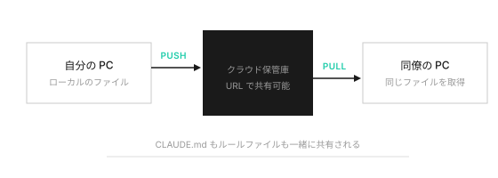

SESSION 04
安全に使って、チームで共有する
今日のゴール
「何が危なくて何が安全か」が自分で判断できるようになる。作ったものをチームに共有する方法を知る。
前回の宿題確認（5分）
ルール5つ書けた人、1〜2個シェアしてもらう
4-1
セキュリティ ― 5つのリスクを知る
20分怖がらせるのが目的じゃない。「何がどう危ないか」が分かれば、安全に使える。
危険度レベル表
| レベル | AIの操作 | リスク | 対策 |
|---|---|---|---|
| 1 | ファイルを読む | ★☆☆☆☆ | 機密ファイルを置かない |
| 2 | ファイルを編集 | ★★☆☆☆ | Gitで戻せる |
| 3 | コマンド実行 | ★★★☆☆ | 確認画面を読む |
| 4 | 外部API連携（MCP） | ★★★★☆ | 管理者が判断 |
| 5 | ブラウザ操作（MCP） | ★★★★★ | 本当に必要か検討 |
ポイント
普段の業務はレベル1〜3で十分。レベル4以上は必要になってから考えればいい。
5つのリスク
リスク① ファイルの誤編集
Gitで「セーブ」しておけばいつでも戻せる。Gitが保険になる。
リスク② 機密情報の送信
AIに見せたファイルはAnthropicに送られる。顧客名簿を作業フォルダに置かない。
リスク③ 危険なコマンドの実行
AIが npm install 〇〇 を実行しようとしたとき、その〇〇が安全か確認。知らないパッケージ名は一度止めて調べる。
リスク④ MCPで範囲が広がる
Google Sheets MCPを入れたら、そのシートの全データをAIが読める。必要最小限の権限で。
リスク⑤ コードの脆弱性
AIが書いたコードが完璧とは限らない。本番公開前に確認。
4-2
GitHub ― 作ったものをチームで共有する
15分Claude Codeで作ったLP、他の人にどうやって渡す？
Git = セーブポイント
セーブする = git commit（今の状態を記録） 戻す = git checkout（過去の状態に戻る） 分岐する = git branch（別パターンを試す）
GitHub = クラウド保管庫

自分のPCにしかないセーブデータを、クラウドに上げて共有する。URLを伝えるだけで相手が取得できる。
ポイント
CLAUDE.mdもGitHubで共有される。チーム全員が同じルールでAIを使える。新しく入った人もリポジトリをダウンロードすれば即座に同じ環境が手に入る。
4-3
社内ルール確認
5分6つのルール。困ったらこのリストに戻ればいい。
- 専用の作業フォルダで作業する
- APIキーをコードに書かない
- 顧客データはAIに読ませない
- AIの実行許可は内容を確認してから
- MCPの追加は管理者に相談
- ルールファイルを勝手に消さない
4-4
ワーク: 自分のチェックリストを作る
10分参加者が自分の業務に合わせたチェックリストを作る。
■ 作業開始前 □ 専用フォルダを作った / 確認した □ そのフォルダに機密情報がないか確認した □ ルールファイルの中身を確認した □ __________________________（自分で追加） ■ 作業中 □ 実行許可は内容を読んでからOKしている □ APIキーやパスワードをコードに書いていない □ __________________________（自分で追加） ■ 作業後 □ Gitでコミット（セーブ）した □ 成果物を確認してからチームに共有した □ __________________________（自分で追加）
4-5
全4回のまとめ
5分第1回: AIエージェントは「自分で手を動かすAI」。便利だが範囲管理が必要。 第2回: ターミナルはただの文字版Finder。作業フォルダが最初の安全策。 第3回: ルールは「テキストファイルのマニュアル」。MCPは「1つずつ追加する道具」。 第4回: 5つのリスクと対策。Gitは保険。GitHubで共有。6つの社内ルール。
心得
AIエージェントは「優秀だけど事情を知らない外注さん」。マニュアル（ルール）を渡して、作業範囲（フォルダ）を決めて、成果物を確認して、安全に共有する（GitHub）。この流れさえ押さえれば、怖がらずに使える。
卒業課題
Claude Codeで簡単なページを1つ作ってみよう
- デスクトップに「graduation-work」フォルダを作る
- そのフォルダでClaude Code（またはCursor）を起動する
- CLAUDE.md にルールを最低3つ書く
- AIに「自己紹介ページを作って」と指示する
- AIが許可を求めてきたら、内容を確認してからOKする
- 完成したら Gitでコミットする
- うまくいったこと・困ったことをメモする
提出物
- 作ったページのスクリーンショット
- CLAUDE.mdの中身のスクリーンショット
- 困ったことのメモ（あれば）
期限: 次の1on1ミーティングまで